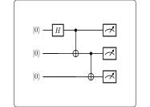

<!DOCTYPE html>
<html xmlns="http://www.w3.org/1999/xhtml">
<head>
  <meta charset="utf-8" />
  <meta name="generator" content="pandoc 3.10.2" />
  <meta name="viewport" content="width=device-width, initial-scale=1.0, user-scalable=yes" />
  <meta name="author" content="QuoNic" />
  <title>ghz</title>
  <style>
    /* Default styles provided by pandoc.
    ** See https://pandoc.org/MANUAL.html#variables-for-html for config info.
    */
    html {
      color: #1a1a1a;
      background-color: #fdfdfd;
    }
    body {
      margin: 0 auto;
      max-width: 36em;
      padding-left: 50px;
      padding-right: 50px;
      padding-top: 50px;
      padding-bottom: 50px;
      hyphens: auto;
      overflow-wrap: break-word;
      text-rendering: optimizeLegibility;
      font-kerning: normal;
    }
    @media (max-width: 600px) {
      body {
        font-size: 0.9em;
        padding: 12px;
      }
      h1 {
        font-size: 1.8em;
      }
    }
    @media print {
      html {
        background-color: white;
      }
      body {
        background-color: transparent;
        color: black;
      }
      p, h2, h3 {
        orphans: 3;
        widows: 3;
      }
      h2, h3, h4 {
        page-break-after: avoid;
      }
    }
    p {
      margin: 1em 0;
    }
    a {
      color: #1a1a1a;
    }
    a:visited {
      color: #1a1a1a;
    }
    img {
      max-width: 100%;
    }
    svg {
      height: auto;
      max-width: 100%;
    }
    h1, h2, h3, h4, h5, h6 {
      margin-top: 1.4em;
    }
    h5, h6 {
      font-size: 1em;
      font-style: italic;
    }
    h6 {
      font-weight: normal;
    }
    ol, ul {
      padding-left: 1.7em;
      margin-top: 1em;
    }
    li > ol, li > ul {
      margin-top: 0;
    }
    blockquote {
      margin: 1em 0 1em 1.7em;
      padding-left: 1em;
      border-left: 2px solid #e6e6e6;
      color: #606060;
    }
    code {
      white-space: pre-wrap;
      font-family: Menlo, Monaco, Consolas, 'Lucida Console', monospace;
      font-size: 85%;
      margin: 0;
      hyphens: manual;
    }
    pre {
      margin: 1em 0;
      overflow: auto;
    }
    pre code {
      padding: 0;
      overflow: visible;
      overflow-wrap: normal;
    }
    .sourceCode {
     background-color: transparent;
     overflow: visible;
    }
    hr {
      border: none;
      border-top: 1px solid #1a1a1a;
      height: 1px;
      margin: 1em 0;
    }
    table {
      margin: 1em 0;
      border-collapse: collapse;
      width: 100%;
      overflow-x: auto;
      display: block;
      font-variant-numeric: lining-nums tabular-nums;
    }
    table caption {
      margin-bottom: 0.75em;
    }
    tbody {
      margin-top: 0.5em;
      border-top: 1px solid #1a1a1a;
      border-bottom: 1px solid #1a1a1a;
    }
    th {
      border-top: 1px solid #1a1a1a;
      padding: 0.25em 0.5em 0.25em 0.5em;
    }
    td {
      padding: 0.125em 0.5em 0.25em 0.5em;
    }
    header {
      margin-bottom: 4em;
      text-align: center;
    }
    #TOC li {
      list-style: none;
    }
    #TOC ul {
      padding-left: 1.3em;
    }
    #TOC > ul {
      padding-left: 0;
    }
    #TOC a:not(:hover) {
      text-decoration: none;
    }
    span.smallcaps{font-variant: small-caps;}
    div.columns{display: flex; gap: 1.5em;}
    div.column{flex: auto;}
    @media screen {
    div.columns{gap: min(4vw, 1.5em);}
    div.column{overflow-x: auto;}
    }
    div.hanging-indent{margin-left: 1.5em; text-indent: -1.5em;}
    /* The extra [class] is a hack that increases specificity enough to
       override a similar rule in reveal.js */
    ul.task-list[class]{list-style: none;}
    ul.task-list li input[type="checkbox"] {
      font-size: inherit;
      width: 0.8em;
      margin: 0 0.8em 0.2em -1.6em;
      vertical-align: middle;
    }
  </style>
  <script defer="" src="" type="text/javascript"></script>
</head>
<body>
<header id="title-block-header">
<h1 class="title">ghz</h1>
<p class="author">QuoNic</p>
</header>
<div class="center">
<p><strong>Foundational / 基础</strong> | 难度：中级 | 预计时间：10
分钟</p>
</div>
<h1 id="为什么需要">为什么需要？</h1>
<p>GHZ 态是 Bell 态的多量子比特推广，是量子纠缠的另一种重要形式。</p>
<h2 id="经典局限">经典局限</h2>
<p>̱</p>
<ul>
<li><p>经典物理无法创建三个或更多粒子的完美关联</p></li>
<li><p>经典通信无法实现多方量子协议</p></li>
</ul>
<h2 id="量子优势">量子优势</h2>
<p>̱</p>
<ul>
<li><p>GHZ 态是量子纠错的基础资源</p></li>
<li><p>用于多方量子通信和量子秘密共享</p></li>
<li><p>是量子计算中常用的纠缠态</p></li>
</ul>
<h2 id="实际应用">实际应用</h2>
<p>̱</p>
<ul>
<li><p>量子纠错（表面码、颜色码）</p></li>
<li><p>量子秘密共享（多方协议）</p></li>
<li><p>量子计算测试（多量子比特纠缠验证）</p></li>
</ul>
<h1 id="快速上手">快速上手</h1>
<pre style="python"><code>from quonic import qgate, qshow
from quonic.gates import CX, H

# 创建 GHZ 态：(|000&gt;+|111&gt;)/sqrt(2)
qgate(H, 0)
qgate(CX, 0, 1)
qgate(CX, 1, 2)
qshow()</code></pre>
<p><strong>预期输出</strong>：</p>
<pre><code>backend: native | shots: 1024
Result:
  |000&gt;    512  ( 50.0%)  ####################
  |111&gt;    512  ( 50.0%)  ####################</code></pre>
<h1 id="原理详解">原理详解</h1>
<h2 id="电路图">电路图</h2>
<div class="center">
<p></p>
</div>
<h2 id="数学推导">数学推导</h2>
<p><strong>Step 1: 初始状态</strong></p>
<p>三个量子比特都从 <span class="math inline">\(|0\rangle\)</span>
开始： <span class="math display">\[\begin{equation}
|\psi_0\rangle = |000\rangle
\end{equation}\]</span></p>
<p><strong>Step 2: Hadamard 门</strong></p>
<p>对 <span class="math inline">\(q_0\)</span> 施加 <span
class="math inline">\(H\)</span> 门： <span
class="math display">\[\begin{equation}
|\psi_1\rangle = \frac{|0\rangle + |1\rangle}{\sqrt{2}} \otimes
|00\rangle = \frac{|000\rangle + |100\rangle}{\sqrt{2}}
\end{equation}\]</span></p>
<p><strong>Step 3: CNOT 门链</strong></p>
<p>CNOT<span class="math inline">\((q_0, q_1)\)</span> 和 CNOT<span
class="math inline">\((q_1, q_2)\)</span> 创建三量子比特纠缠： <span
class="math display">\[\begin{equation}
|\psi_2\rangle = \frac{|000\rangle + |111\rangle}{\sqrt{2}}
\end{equation}\]</span></p>
<p><strong>Step 4: 测量概率</strong></p>
<p>̱</p>
<ul>
<li><p><span class="math inline">\(P(|000\rangle) =
0.5\)</span></p></li>
<li><p><span class="math inline">\(P(|111\rangle) =
0.5\)</span></p></li>
<li><p>其他态的概率为 0</p></li>
</ul>
<h2 id="几何解释">几何解释</h2>
<p>GHZ 态是三量子比特的最大纠缠态。在 Bloch
球上，三个量子比特的状态完全关联——测量一个就能确定其他两个。</p>
<h1 id="代码详解">代码详解</h1>
<pre style="python"><code>from quonic import qgate, qshow
from quonic.gates import CX, H

qgate(H, 0)       # H gate on q0: create superposition
qgate(CX, 0, 1)   # CNOT: entangle q0 and q1
qgate(CX, 1, 2)   # CNOT: entangle q1 and q2
qshow()            # measure and display</code></pre>
<h2 id="api-说明">API 说明</h2>
<div class="center">
<table>
<thead>
<tr>
<th style="text-align: left;"><strong>API</strong></th>
<th style="text-align: left;"><strong>参数</strong></th>
<th style="text-align: left;"><strong>说明</strong></th>
</tr>
</thead>
<tbody>
<tr>
<td style="text-align: left;"><code>qgate(H, 0)</code></td>
<td style="text-align: left;">H: Hadamard 门</td>
<td style="text-align: left;">创建叠加态</td>
</tr>
<tr>
<td style="text-align: left;"><code>qgate(CX, 0, 1)</code></td>
<td style="text-align: left;">CX: CNOT 门</td>
<td style="text-align: left;">创建两量子比特纠缠</td>
</tr>
<tr>
<td style="text-align: left;"><code>qgate(CX, 1, 2)</code></td>
<td style="text-align: left;">CX: CNOT 门</td>
<td style="text-align: left;">扩展到三量子比特</td>
</tr>
</tbody>
</table>
</div>
<h1 id="进阶用法">进阶用法</h1>
<h2 id="场景-1n-量子比特-ghz-态">场景 1：N 量子比特 GHZ 态</h2>
<pre style="python"><code># N-qubit GHZ state
n = 5
qgate(H, 0)
for i in range(n - 1):
    qgate(CX, i, i + 1)
qshow()</code></pre>
<h2 id="场景-2ghz-态的保真度测试">场景 2：GHZ 态的保真度测试</h2>
<pre style="python"><code># Fidelity test with noise
qgate(H, 0)
qgate(CX, 0, 1)
qgate(CX, 1, 2)
qshow(noise=0.05)</code></pre>
<h2 id="场景-3ghz-态用于量子纠错">场景 3：GHZ 态用于量子纠错</h2>
<pre style="python"><code># GHZ state for error correction
# Encode logical qubit in GHZ state
qgate(H, 0)
qgate(CX, 0, 1)
qgate(CX, 1, 2)
# Syndrome measurement
qgate(CX, 0, 3)
qgate(CX, 1, 3)
qshow()</code></pre>
<h1 id="适用场景">适用场景</h1>
<h2 id="量子纠错">量子纠错</h2>
<p>GHZ
态是量子纠错码的基础资源。表面码和颜色码都使用多量子比特纠缠来保护量子信息。</p>
<h2 id="量子秘密共享">量子秘密共享</h2>
<p>在量子秘密共享协议中，GHZ
态用于将秘密分发给多个参与方。只有所有参与方合作才能恢复秘密。</p>
<h2 id="量子计算测试">量子计算测试</h2>
<p>GHZ 态是测试量子硬件多量子比特纠缠能力的标准基准。</p>
<h1 id="常见问题">常见问题</h1>
<h2 id="ghz-态和-bell-态有什么区别">GHZ 态和 Bell 态有什么区别？</h2>
<p>Bell 态是 2 量子比特纠缠，GHZ 态是 3+ 量子比特纠缠。GHZ 态是 Bell
态的推广。</p>
<h2 id="为什么-ghz-态只有-000-和-111">为什么 GHZ 态只有 |000&gt; 和
|111&gt;？</h2>
<p>因为 CNOT 门链将 <span class="math inline">\(q_0\)</span>
的状态传播到所有量子比特。如果 <span class="math inline">\(q_0\)</span>
是 <span class="math inline">\(|0\rangle\)</span>，所有量子比特都是
<span class="math inline">\(|0\rangle\)</span>；如果 <span
class="math inline">\(q_0\)</span> 是 <span
class="math inline">\(|1\rangle\)</span>，所有量子比特都是 <span
class="math inline">\(|1\rangle\)</span>。</p>
<h2 id="ghz-态的纠缠特性是什么">GHZ 态的纠缠特性是什么？</h2>
<p>GHZ
态是最大纠缠态——测量一个量子比特会瞬间确定所有其他量子比特的状态。</p>
<h1 id="学习路径">学习路径</h1>
<h2 id="前置知识">前置知识</h2>
<p>̱</p>
<ul>
<li><p>Bell 态（2 量子比特纠缠）</p></li>
<li><p>CNOT 门和 Hadamard 门</p></li>
<li><p>量子测量</p></li>
</ul>
<h2 id="继续学习">继续学习</h2>
<p>̱</p>
<ul>
<li><p>量子纠错码（表面码、颜色码）</p></li>
<li><p>量子秘密共享</p></li>
<li><p>多量子比特纠缠验证</p></li>
</ul>
<h1 id="完整示例代码">完整示例代码</h1>
<h2 id="示例-1基本-ghz-态">示例 1：基本 GHZ 态</h2>
<pre style="python"><code>from quonic import qgate, qshow
from quonic.gates import CX, H

qgate(H, 0)
qgate(CX, 0, 1)
qgate(CX, 1, 2)
qshow()</code></pre>
<h2 id="示例-2带噪声的-ghz-态">示例 2：带噪声的 GHZ 态</h2>
<pre style="python"><code>from quonic import qgate, qshow
from quonic.gates import CX, H

qgate(H, 0)
qgate(CX, 0, 1)
qgate(CX, 1, 2)
qshow(noise=0.05)</code></pre>
<p> </p>
<h1 id="下载">下载</h1>
<p></p>
<ul>
<li><p>(https://github.com/ChrisLee0721/QuoNic/blob/main/examples/ghz/ghz.py)</p></li>
</ul>
</body>
</html>
